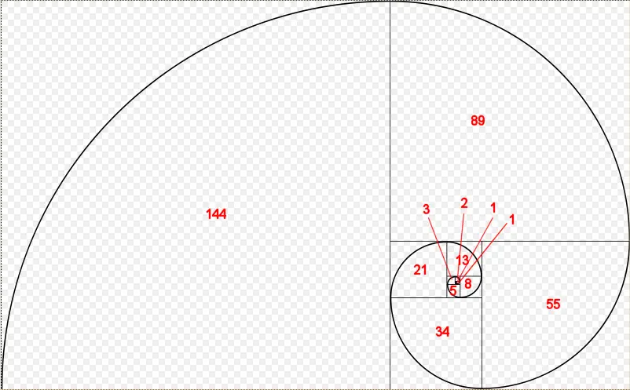

A recursive function in C++ is a function that calls itself. Here is an example of a poorly-written recursive function:
#include <iostream>
void countDown(int count)
{
std::cout << "push " << count << '\n';
countDown(count-1); // countDown() calls itself recursively
}
int main()
{
countDown(5);
return 0;
}When countDown(5) is called, “push 5” is printed, and countDown(4) is called. countDown(4) prints “push 4” and calls countDown(3). countDown(3) prints “push 3” and calls countDown(2). The sequence of countDown(n) calling countDown(n-1) is repeated indefinitely, effectively forming the recursive equivalent of an infinite loop.
In lesson 20.2 -- The stack and the heap , you learned that every function call causes data to be placed on the call stack. Because the countDown() function never returns (it just calls countDown() again), this information is never being popped off the stack! Consequently, at some point, the computer will run out of stack memory, stack overflow will result, and the program will crash or terminate. On the author’s machine, this program counted down to -11732 before terminating!
Author’s note
A tail call is a function call that occurs at the tail (end) of a function. Functions with recursive tail calls are fairly easy for the compiler to optimize into an iterative (non-recursive) function. Such a function would not cause the system to run out of stack space in the above example. If you run the above program and it runs forever, this is likely what happened.
Recursive termination conditions
Recursive function calls generally work just like normal function calls. However, the program above illustrates the most important difference with recursive functions: you must include a recursive termination condition, or they will run “forever” (actually, until the call stack runs out of memory). A recursive termination is a condition that, when met, will cause the recursive function to stop calling itself.
Recursive termination generally involves using an if statement. Here is our function redesigned with a termination condition (and some extra output):
#include <iostream>
void countDown(int count)
{
std::cout << "push " << count << '\n';
if (count > 1) // termination condition
countDown(count-1);
std::cout << "pop " << count << '\n';
}
int main()
{
countDown(5);
return 0;
}Now when we run our program, countDown() will start by outputting the following:
push 5 push 4 push 3 push 2 push 1
If you were to look at the call stack at this point, you would see the following:
countDown(1) countDown(2) countDown(3) countDown(4) countDown(5) main()
Because of the termination condition, countDown(1) does not call countDown(0) -- instead, the “if statement” does not execute, so it prints “pop 1” and then terminates. At this point, countDown(1) is popped off the stack, and control returns to countDown(2). countDown(2) resumes execution at the point after countDown(1) was called, so it prints “pop 2” and then terminates. The recursive function calls get subsequently popped off the stack until all instances of countDown have been removed.
Thus, this program in total outputs:
push 5 push 4 push 3 push 2 push 1 pop 1 pop 2 pop 3 pop 4 pop 5
It’s worth noting that the “push” outputs happen in forward order since they occur before the recursive function call. The “pop” outputs occur in reverse order because they occur after the recursive function call, as the functions are being popped off the stack (which happens in the reverse order that they were put on).
A more useful example
Now that we’ve discussed the basic mechanics of recursive function calls, let’s take a look at another recursive function that is slightly more typical:
// return the sum of all the integers between 1 (inclusive) and sumto (inclusive)
// returns 0 for negative numbers
int sumTo(int sumto)
{
if (sumto <= 0)
return 0; // base case (termination condition) when user passed in an unexpected argument (0 or negative)
if (sumto == 1)
return 1; // normal base case (termination condition)
return sumTo(sumto - 1) + sumto; // recursive function call
}Recursive programs are often hard to figure out just by looking at them. It’s often instructive to see what happens when we call a recursive function with a particular value. So let’s see what happens when we call this function with parameter sumto = 5.
sumTo(5) called, 5 <= 1 is false, so we return sumTo(4) + 5. sumTo(4) called, 4 <= 1 is false, so we return sumTo(3) + 4. sumTo(3) called, 3 <= 1 is false, so we return sumTo(2) + 3. sumTo(2) called, 2 <= 1 is false, so we return sumTo(1) + 2. sumTo(1) called, 1 <= 1 is true, so we return 1. This is the termination condition.
Now we unwind the call stack (popping each function off the call stack as it returns):
sumTo(1) returns 1. sumTo(2) returns sumTo(1) + 2, which is 1 + 2 = 3. sumTo(3) returns sumTo(2) + 3, which is 3 + 3 = 6. sumTo(4) returns sumTo(3) + 4, which is 6 + 4 = 10. sumTo(5) returns sumTo(4) + 5, which is 10 + 5 = 15.
At this point, it’s easier to see that we’re adding numbers between 1 and the value passed in (both inclusive).
Because recursive functions can be hard to understand by looking at them, good comments are particularly important.
Note that in the above code, we recurse with value
sumto - 1
rather than
--sumto
. We do this because
operator--
has a side effect, and using a variable that has a side effect applied more than once in a given expression will result in undefined behavior. Using
sumto - 1
avoids side effects, making sumto safe to use more than once in the expression.
Recursive algorithms
Recursive functions typically solve a problem by first finding the solution to a subset of the problem (recursively), and then modifying that sub-solution to get to a solution. In the above algorithm, sumTo(value) first solves sumTo(value-1), and then adds the value of variable value to find the solution for sumTo(value).
In many recursive algorithms, some inputs produce trivial outputs. For example, sumTo(1) has the trivial output 1 (you can calculate this in your head), and does not benefit from further recursion. Inputs for which an algorithm trivially produces an output is called a base case . Base cases act as termination conditions for the algorithm. Base cases can often be identified by considering the output for an input of 0, 1, “”, ”, or null.
Fibonacci numbers
One of the most famous mathematical recursive algorithms is the Fibonacci sequence. Fibonacci sequences appear in many places in nature, such as branching of trees, the spiral of shells, the fruitlets of a pineapple, an uncurling fern frond, and the arrangement of a pine cone.
Here is a picture of a Fibonacci spiral:

Each of the Fibonacci numbers is the length of the side of the square that the number appears in.
Fibonacci numbers are defined mathematically as:
| F(n) = |
0 if n = 0
1 if n = 1 f(n-1) + f(n-2) if n > 1 |
Consequently, it’s rather simple to write a (not very efficient) recursive function to calculate the nth Fibonacci number:
#include <iostream>
int fibonacci(int count)
{
if (count == 0)
return 0; // base case (termination condition)
if (count == 1)
return 1; // base case (termination condition)
return fibonacci(count-1) + fibonacci(count-2);
}
// And a main program to display the first 13 Fibonacci numbers
int main()
{
for (int count { 0 }; count < 13; ++count)
std::cout << fibonacci(count) << ' ';
return 0;
}Running the program produces the following result:
0 1 1 2 3 5 8 13 21 34 55 89 144
Which you will note are exactly the numbers that appear in the Fibonacci spiral diagram.
Memoization algorithms
The above recursive Fibonacci algorithm isn’t very efficient, in part because each call to a Fibonacci non-base case results in two more Fibonacci calls. This produces an exponential number of function calls (in fact, the above example calls fibonacci() 1205 times!). There are techniques that can be used to reduce the number of calls necessary. One technique, called memoization , caches the results of expensive function calls so the result can be returned when the same input occurs again.
Here’s a memoized version of the recursive Fibonacci algorithm:
#include <iostream>
#include <vector>
// h/t to potterman28wxcv for a variant of this code
// count is now a std::size_t to make indexing the std::vector easier
int fibonacci(std::size_t count)
{
// We'll use a static std::vector to cache calculated results
static std::vector results{ 0, 1 };
// If we've already seen this count, then use the cache'd result
if (count < std::size(results))
return results[count];
// Otherwise calculate the new result and add it
results.push_back(fibonacci(count - 1) + fibonacci(count - 2));
return results[count];
}
// And a main program to display the first 13 Fibonacci numbers
int main()
{
for (int count { 0 }; count < 13; ++count)
std::cout << fibonacci(static_cast<std::size_t>(count)) << ' ';
return 0;
}This memoized version makes 35 function calls, which is much better than the 1205 of the original algorithm.
Recursive vs iterative
One question that is often asked about recursive functions is, “Why use a recursive function if you can do many of the same tasks iteratively (using a for loop or while loop )?”. It turns out that you can always solve a recursive problem iteratively -- however, for non-trivial problems, the recursive version is often much simpler to write (and read). For example, while it’s possible to write the Fibonacci function iteratively, it’s a little more difficult! (Try it!)
Iterative functions (those using a for-loop or while-loop) are almost always more efficient than their recursive counterparts. This is because every time you call a function there is some amount of overhead that takes place in pushing and popping stack frames. Iterative functions avoid this overhead.
That’s not to say iterative functions are always a better choice. Sometimes the recursive implementation of a function is so much cleaner and easier to follow that incurring a little extra overhead is more than worth it for the benefit in maintainability, particularly if the algorithm doesn’t need to recurse too many times to find a solution.
In general, recursion is a good choice when most of the following are true:
- The recursive code is much simpler to implement.
- The recursion depth can be limited (e.g. there’s no way to provide an input that will cause it to recurse down 100,000 levels).
- The iterative version of the algorithm requires managing a stack of data.
- This isn’t a performance-critical section of code.
However, if the recursive algorithm is simpler to implement, it may make sense to start recursively and then optimize to an iterative algorithm later.
Best practice
Generally favor iteration over recursion, except when recursion really makes sense.
Quiz time
- A factorial of an integer N (written N!) is defined as the product (multiplication) of all the numbers between 1 and N (0! = 1). Write a recursive function called factorial that returns the factorial of the input. Test it with the first 7 factorials.
Hint: Remember that (x * y) = (y * x), so the product of all the numbers between 1 and N is the same as the product of all the numbers between N and 1.
- Write a recursive function that takes an integer as input and returns the sum of each individual digit in the integer (e.g. 357 = 3 + 5 + 7 = 15). Print the answer for input 93427 (which is 25). Assume the input values are positive.
3a) This one is slightly trickier. Write a program that asks the user to enter a positive integer, and then uses a recursive function to print out the binary representation for that number. Use method 1 from lesson O.4 -- Converting integers between binary and decimal representation .
Hint: Using method 1, we want to print the bits in reverse order. This means your print statement should be after the recursive call.
3b) Extra credit: Update your code from 3a to handle the case where the user may enter 0 or a negative number.
Here’s a sample output (assuming 32-bit integers):
Enter an integer: -15 11111111111111111111111111110001
Hint: Your printBinary() function doesn’t actually need to handle negative numbers. If you pass it a positive value with the same binary representation as the negative number, it will produce the correct output.